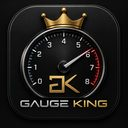
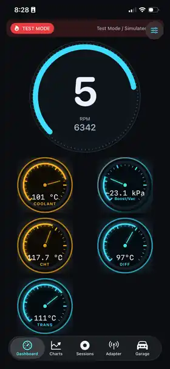
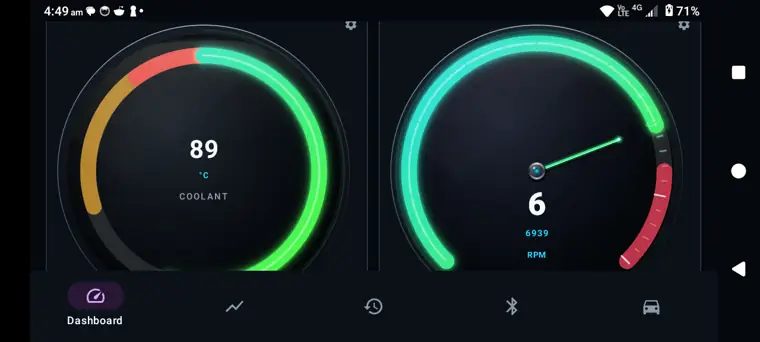
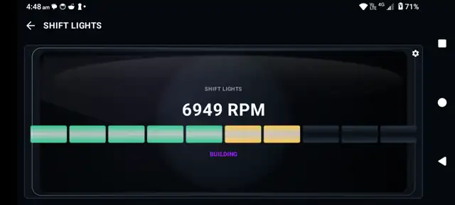

Gauge King Vision — ENGO 3
Connect supported ENGO 3 smart glasses by ENGO Eyewear and place key driving information directly in your field of view, including speed, shift lights and critical warnings.

Pocket AI MechanicGaugeKing App StoreA high-contrast performance dashboard that now goes beyond the screen. Read live OBD-II telemetry, build your own layouts and bring critical driving information directly into your field of view with Gauge King Vision.
From road and garage to track, Gauge King puts the data that matters where you need it — on iPhone, Apple CarPlay and supported AR glasses.

To celebrate our partnership with ENGO Eyewear, Gauge King is supporting the 2026 OZ RenaultSport Nationals at Winton Motor Raceway in Victoria on 18 October 2026.
And there’s more. Gauge King now brings live telemetry support to the iconic Renault Clio II 172/182 — taking a French cult classic that predates standard OBD-II support and bringing its ECU data into 2026.
Ooh la la.
The Android version is now in testing, bringing the Gauge King look and feel to a new platform with high-definition gauges, configurable shift lights and the same focus on clear, track-ready telemetry.


Keep the dashboard focused on one critical value or build out a full telemetry view with coolant, boost/vac, cylinder head temperature, differential temperature, transmission temperature and more.
Configure RPM thresholds, warning zones, per-gear shift points and flash states so the shift cue is impossible to miss when you're focused on the road or track.
Built-in simulated telemetry lets you preview layouts, thresholds, warnings and gauge behaviour before connecting an OBD-II adapter or heading to the track.
See how GaugeKing uses clear audio alerts to bring important driving information to your attention.
A walkthrough of the live dashboard, layout editor, and synthetic gauge modes.
GaugeKing brings vehicle telemetry, driver alerts and track timing together across iPhone, CarPlay and supported AR glasses.
Connect supported ENGO 3 smart glasses by ENGO Eyewear and place key driving information directly in your field of view, including speed, shift lights and critical warnings.
Pair Gauge King with RaceBox Micro to bring lap times and live lap time deltas into your AR display, helping you understand whether you are gaining or losing time while staying focused on the track.
Connect any compatible Bluetooth ELM327 adapter and read RPM, speed, coolant, IAT, throttle, MAF, timing, and more in real time.
Select your gauges, reorder them with up/down controls, and tune the dashboard style. Keep it minimal for track or rich for full monitoring.
Estimated power (kW/hp) and torque (Nm) gauges derived from OBD data when direct ECU readings are not available, with transparent source labels.
F1/GT3 LED strip and Tach Colour shift indicators with configurable RPM thresholds, warning zones, per-gear shift points, and flash states.
Select Generic OBD-II, Mustang S550, or Mustang S650. Each profile adapts telemetry gating, displacement, and torque/power estimation to your car.
Built-in synthetic scenarios let you preview behavior, validate widget logic, and demonstrate the app without requiring a live adapter or vehicle.
Hear clear alerts when oil pressure or other monitored temperatures cross your configurable thresholds, so important changes never go unnoticed.
Use Siri commands to interact with GaugeKing more naturally while keeping your attention on the road.
Bring GaugeKing into your compatible vehicle with an Apple CarPlay experience designed for clear, glanceable driving information.
A closer look at the current Apple experience across portrait, landscape, shift-light and simulated dashboard views.
Download GaugeKing, connect your OBD-II adapter and take your telemetry from the dashboard to CarPlay, AR glasses and the track.